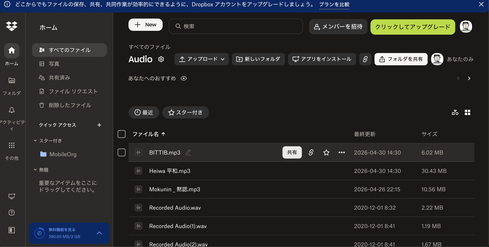
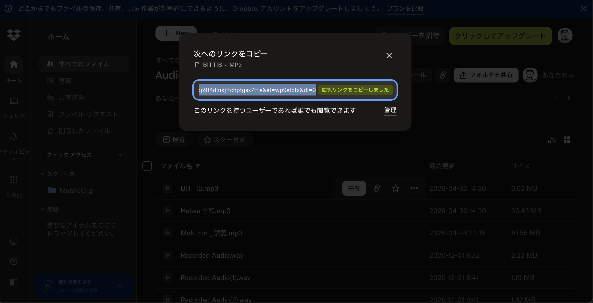
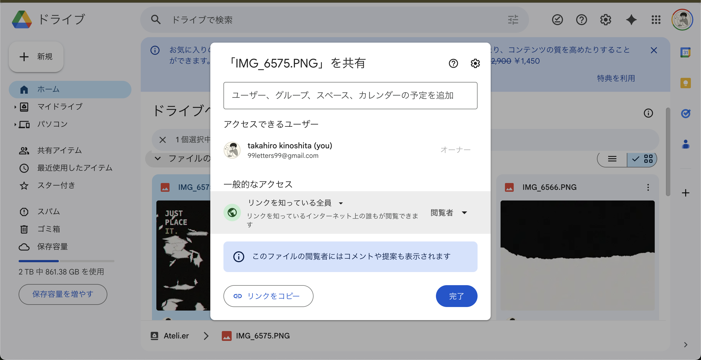

— 00 トップページ — ateli.er Top page — ateli.er top
アクセスして最初に出るのが トップページ。横スクロールするテキストの帯と画像サムネイル列で、住人たちが置いた block がランダムに流れます。
The top page is what you see first. Horizontal marquees and image thumbnails — blocks left by residents, scrolling at their own pace.
右上に my channel · feed · comment · upload のタブ。これがアトリエの心臓部です。
Top-right tabs: my channel · feed · comment · upload. The heart of Atelier.

— 01 My Channel — 自分の作品置き場 My Channel — your own shelf channel · block
自分が作った channel と、その中に置いた block の一覧。アトリエの中で「自分の場所」になります。
A list of channels you've created and the blocks inside them. Your space within Atelier.
「My Channel」の名前にハンドル名 (例:
Taka) が出ます。タイトル直下に 6 channels · 23 blocks のように数字が出ます。グリッドはすべて自分が置いた block。
Tip:Your handle (e.g.
Taka) shows in the title. Right under: 6 channels · 23 blocks. Every card in the grid is something you placed.

— 02 Feed — 全 channel の活動を時系列で Feed — all activity, newest first timeline
自分のすべての channel に置いた block を 新しい順 にまとめたタイムライン。アルゴリズムなし、ランキングなし、いいね数なし。flat な記録 です。
A flat, chronological timeline of every block you've placed. No algorithm. No ranking. No like counts. Just a record.
例: @Taka placed 2 images in BMboard のように、誰が・どの channel に・何を置いたかが 1 行で出ます。
Format: @Taka placed 2 images in BMboard — who, what, where, in one line.

— 03 Explore — 他の住人を見にいく Explore — visit other tenants residents · public
アトリエに住む 他の人たち と、彼らが Public に公開した block をまとめて見る場所。
A list of other residents and the blocks they've made public.
「My Channel」が 自分 の作品なら、「Explore」は 他人 の作品。residents セクションでハンドル名と参加日が、その下に public blocks の thumbnail が並びます。 Tip:
My Channel = your own. Explore = everyone else. The residents row shows handles + join date; below is a grid of their public blocks.

— 04 Comment — 短いひとこと Comment — single-line replies footprint
自分の block に届いた 短いコメント の一覧。返信通知も、ネストも、長文もありません。短く・ひとつだけ。
A list of short single-line replies on your blocks. No reply threads. No nesting. Just brief, singular.

— 05 Upload — block を置く Upload — place a block audio · image · text · url
アトリエの central な動作: block を channel に置く こと。ここはあなたの制作物を、静かに置いておく場所です。
The central action: place a block in a channel. Leave things here, quietly.
あなたの channel と block は Supabase 上に保存されます。同時にブラウザの
localStorage にもキャッシュされます。別端末に移したい場合は SYNC TO ANOTHER DEVICE から URL を発行してください。
Tip 1:Your channels and blocks are saved on Supabase. Also cached in
localStorage. To migrate, use SYNC TO ANOTHER DEVICE to generate a URL and paste it elsewhere.

上部に
AUDIO LINK · IMAGE LINK · TEXT · URL の 4 タブ = block の 4 種類。先に種類を選ぶ → channel を選ぶ → タイトル等を入力 → 保存。AUDIO は 外部リンク方式。Google Drive / Dropbox の直リンクを貼ります。 Tip 2:
4 tabs:
AUDIO LINK · IMAGE LINK · TEXT · URL = the 4 block types. Choose type → pick channel → fill title → save.AUDIO uses external links (Google Drive / Dropbox / direct mp3 url).

— ✦ ファイルの 共有のしかた Sharing your files dropbox · drive
Atelier は音源も画像もホストしません。外部サービスの 共有リンクを貼るだけです。
おすすめ: 音源 = Dropbox、画像 = Google Drive または imgur.com。
⚠ DropboxおよびFacebook のURLは 画像には使用不可（SNSサムネイルが表示されない・ホットリンクブロックのため）。
Atelier doesn't host audio or images. Just paste a share link from an external service.
Recommended: audio → Dropbox, images → Google Drive or imgur.com.
⚠ Dropbox and Facebook URLs cannot be used for images (hotlink blocked / SNS thumbnails won't display).
① 音源 (audio block) → Dropbox を使う
① Audio → use Dropbox
1. 音源ファイル (mp3 / wav) を Dropbox にアップロード
2. 「共有」→「リンクをコピー」(共有先: リンクを知っている全員)
3. Atelier の Upload →
AUDIO LINK → audio url 欄に貼る→ 末尾が
?dl=0 のままでも自動変換されます。⚠ 音源だけは Google Drive を使わないでください。 Drive は CORP ポリシーで音声再生がブロックされます。 Steps:
1. Upload audio (mp3 or wav) to Dropbox
2. "Share" → "Copy link" (set to "Anyone with the link")
3. Atelier: Upload →
AUDIO LINK → paste into audio url→ A trailing
?dl=0 is fine — Atelier converts it.⚠ Do NOT use Google Drive for audio. Drive blocks audio playback (CORP policy).


AUDIO LINK に貼る
Copy link → paste
② 画像 (image block) → Google Drive または imgur.com を使う
② Images → use Google Drive or imgur.com
1. 画像を Google Drive にアップロード
2. 右クリック →「共有」→ 一般的なアクセスを 「リンクを知っている全員」 に変更 →「リンクをコピー」
3. Atelier: Upload →
IMAGE LINK → image url 欄に貼る→ 自動で直接表示できる URL に変換されます。
imgur.com の手順（SNSシェア用に最も安定）:
1. imgur.com にアクセス → 画像をドラッグ＆ドロップでアップロード
2. アップロード後に表示される「Direct Link」をコピー（末尾が
.jpg / .png のURL）3. Atelier の image url 欄に貼る
⚠ Dropbox / Facebookの URL は画像に使用不可。 Dropboxは「noimageindex」ポリシーにより、SNSシェア時のサムネイルとして表示されません。 Google Drive steps:
1. Upload image to Google Drive
2. Right-click → "Share" → set access to "Anyone with the link" → "Copy link"
3. Atelier: Upload →
IMAGE LINK → paste into image url→ Atelier auto-converts to a directly-viewable URL.
imgur.com steps (most reliable for SNS sharing):
1. Go to imgur.com → drag and drop your image
2. After upload, copy the "Direct Link" (URL ending in
.jpg / .png)3. Paste into Atelier's image url field
⚠ Do NOT use Dropbox or Facebook URLs for images. Dropbox applies a "noimageindex" policy — SNS thumbnails won't display.

— 06 Channel view — 連作の中 Channel view — inside a series public · draft
My Channel から channel を 1 つ選ぶと、その中の block 一覧 が出ます。パンくず (Taka / Demos) で 1 つ上の階層に戻れます。
Tap a channel from My Channel to see the blocks inside. Use the breadcrumb (Taka / Demos) to step back.
block の右上の □ アイコンは Public / Draft の表示。Public は他の住人にも見える、Draft は自分だけ。
The □ badge shows Public / Draft state. Public is visible to residents; Draft is only you.

— 07 Block view — 1 つの作品ページ Block view — a single work play · comment
block 1 つを開いた画面。パンくず + メタ情報 + 本体 (画像 / 音 / テキスト / URL) + コメント欄。AUDIO block は PLAY HERE ボタンで再生、画面下にプレイヤーバーが固定されます。
A single block opened. Breadcrumb + meta + body (image / audio / text / url) + comments. For AUDIO: tap PLAY HERE. A player bar fixes to the bottom.


— 08 Connect — 他人の作品を自分の channel に呼ぶ Connect — pin another's work into your channel core feature
Atelier ならではの機能 「connect」。Explore で見つけた 他人の public block を、自分の channel に 紐付ける (pin) 動作です。reblog / repost と似ているけど、並べる側の文脈を主役にする違いがあります。
The core feature: connect. Pin another resident's public block into your own channel. Similar to reblog / repost — but the emphasis is on your context of placement.
たとえば「@DDD の音源」と「@BMBoard の画像」を、自分の channel "影響源" に並べる。複数の住人の作品が、あなたの編集行為によって 新しい意味 を持つ。これが connect の本質です。
Example: pin @DDD's audio and @BMBoard's image into your "influences" channel. The blocks gain new meaning through your editorial act.
Explore でみつけた block ↓ ┌─────────────┐ ┌─────────────┐ │ @DDD │ │ @BMBoard │ │ audio block │ │ image block │ │ "夜の音" │ │ "黒板の渦" │ └─────┬───────┘ └─────┬───────┘ │ ↓ connect │ └───→ "影響源" channel ←──┘ (あなたの channel) Found in Explore ┌─────────────┐ ┌─────────────┐ │ @DDD │ │ @BMBoard │ │ "Night Air" │ │ "Blackboard"│ └─────┬───────┘ └─────┬───────┘ └───→ "Influences" ←────┘ (your channel)
1. Explore で気になる public block を開く
2. 画面の
→ connect ボタンをタップ3. 自分のどの channel に紐付けるかを選ぶ
4. My Channel に "pin した block" として現れる
元の block は所有者のもののまま。あなたは 選んで並べた だけ。 How to use connect:
1. Open a public block in Explore
2. Tap
→ connect3. Pick which of your channels to pin it into
4. It appears in My Channel as a "pinned block"
The original stays with its owner. You chose and placed it.